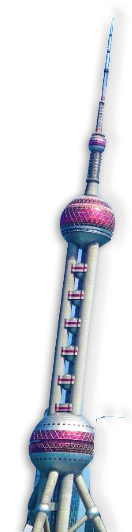
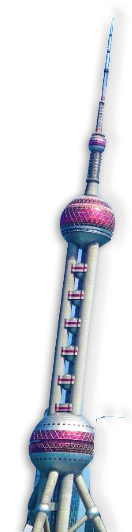
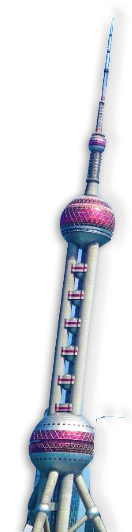
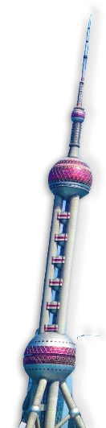

Jinjiang Hotel—A Century of Glamour on South Maoming Road—Nestled beneath the plane trees at No. 59 South Maoming Road, two distinctly styled historic buildings—the Cathay Apartment (1929) and the Grosvenor House (1935)—together form the legendary Jinjiang Hotel, a landmark in Shanghai’s hospitality scene. Founded in 1951 by the pioneering businesswoman Dong Zhujun, Jinjiang was the first foreign-oriented hotel established in the newly founded People’s Republic of China.
Its unique architectural pairing—Gothic towers clashing harmoniously with Art Deco lines—has witnessed countless diplomatic milestones. In 1972, President Nixon drafted the Shanghai Communiqué here; in 1986, Queen Elizabeth II dined on the hotel’s signature Jinjiang roast duck.
The 13-story Cathay Apartment, once famed as the “Thirteen Floors,” features one of Shanghai’s earliest Otis elevators, tucked behind its bronze-framed revolving door. The Grosvenor House, arranged in the shape of the Chinese character “八” (eight), boasts curved balconies and wrought-iron railings, capturing the modern flair of 1930s Shanghai.
Today, as a five-star hotel, Jinjiang preserves its rich legacy: Chairman Mao’s suite remains intact; beneath the crystal chandeliers of the small auditorium hang archival photographs from the signing of the Sino-American Joint Communiqué. In the hotel’s 30,000-square-meter garden, the cedar tree planted jointly by Zhou Enlai and Prince Sihanouk still spreads its graceful canopy.
From Republican-era celebrities to contemporary statesmen, from gangland tycoons to global magnates, this Shanghai cultural relic with 442 guest rooms continues to live up to its reputation: “One hotel, half of modern Shanghai’s history.”
Dream Café 1926: Savoring a Century in a Sip
Located in the north wing of the Jinjiang Hotel, Dream Café 1926 is less a café and more a time capsule of old Shanghai. Built in tandem with the hotel itself, this space has witnessed nearly a century of history. Though recently renovated, it retains a distinctly vintage charm: sunlight spills gently through its glass dome, bathing the room in a warm, serene glow. To sit here with a cup of coffee is to step into a reel of historic film—every detail steeped in legend.
It feels like stepping into the elite social salons of Republican-era Shanghai. Here, you can sink into the same velvet armchairs where Premier Zhou Enlai once drafted the Sino-American Joint Communiqué; walk across the spring-loaded teak floors that once hosted Soong Mei-ling’s charity balls; gaze up at a lapis-blue coffered ceiling modeled after the British Parliament; admire handcrafted Art Deco steel windows made by Jewish artisans.
From the ceremonial siphon coffee served with silver sugar tongs, echoing the ritual of Café Richelieu, to the chestnut flour cake personally reimagined by Jinjiang founder Madam Dong Zhujun, every offering tells a story. You might even find yourself seated at the same round table where Charlie Chaplin dined during his 1936 visit to Shanghai.
Stirring your coffee with a silver spoon here is to taste history itself—just as artist Chen Danqing once said:“What Shanghai people sip in their coffee is the flavor of history itself.”
Jinjiang Hotel